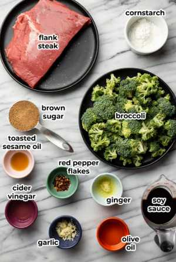
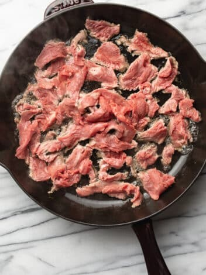

Ingredient list

Beef and Brococoli Ingredients
Sauce Ingredients
- 1/2 cup soy sauce
- 1/4 cup brown sugar
- 1 tsp ginger


Cut beef into thin strips or cubes. Marinate the beef with soy sauce, cornstrach, and a touch of ginger and garlic (optional) for about 15-30 minutes. Heat oil in a wok or larger skillet over high heat. Stir-fry the beef untill browned and cooked through. Remove the beef from the work and set aside.

Add a little more oil to the wok or skillet. Add broccoli florets and stir-fry untill tender-crisp. Remove the broccoli from the wok and set aside.

Return the beef to the wok or skillet. Add the broccoli back in.Prepare a sauce with soy sauce, oyster sauce (optional),cornstrach slurry, and a touch of seasme oil. Pour the sauce over the beef and broccoli and stir-fry untill the sauce thickens. Serve hot over rice or noodles.